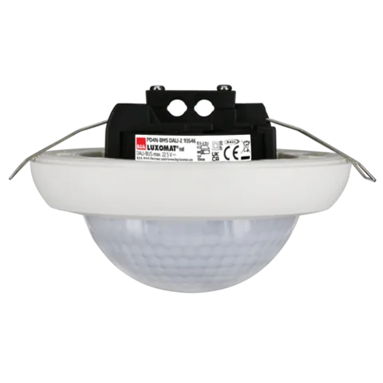

Generar documento de prescripción 93546
En la ficha oficial de beg-luxomat.com


DALI-2 (BMS)
DALI-2 (BMS) Detector de presencia PIR con cobertura de 360° y un alcance de hasta Ø24m (450 m²), dispositivo de entrada DALI-2.
Alcances de la ficha técnica para una altura de montaje de 2,5 m. Seleccione un tipo de movimiento.
Fuente: ficha oficial PD4N-BMS DALI-2. Diagrama a escala (cuadrícula de 2 m). Alcances a otras alturas de montaje: [dato a confirmar por el cliente]
Según la ficha técnica de B.E.G.
Ref. 93546 · EAN 4007529935468
| Referencia / EAN | 93546 / 4007529935468 |
|---|---|
| Tensión de alimentación | del bus DALI, máx. 22.5 V DC |
| Dimensiones | Ø 106 x 68 mm |
| Configuración | vía bus DALI y aplicación compatible con multisensores DALI según IEC62386, partes 101, 103, 303 y 304 |
| Consumo de corriente | 7 mA |
| Tiempo de asentamiento | 200 ms |
| Área de detección | horizontal 360° (Montaje en techo) |
| Alcance | máx. Ø 24 m transversal | máx. Ø 8 m frontal | máx. Ø 6.4 m actividad sedentaria |
| Área de cobertura (movimiento transversal) | 450 m² / 2.5 m Altura de montaje |
| Altura de montaje mín. / máx. / recomendada | 2 m / 10 m / 2.5 m |
| Grado de protección / Clase | IP20 / Clase II |
| Resistencia a impactos | IK04 |
| Valores de luz medidos | 0 - 4095 Lux, Medición de luz mixta (natural+artificial) |
| Temperatura ambiental | -25 °C a +55 °C |
| Carcasa | Policarbonato de alta calidad |
| Color de material | blanco mate, similar RAL9010 |
Partida para el Generador de precios / BC3: [dato a confirmar por el cliente]
En la ficha oficial de beg-luxomat.com
En la ficha oficial de beg-luxomat.com
En la ficha oficial de beg-luxomat.com
En la ficha oficial de beg-luxomat.com
En la ficha oficial de beg-luxomat.com
En la ficha oficial de beg-luxomat.com
Mismo sensor 360°, distinto sistema. La columna resaltada es este modelo.
| Característica | PD4N-BMS DALI-2 | PD4N-M-DACO DALI-2 | PD4N-KNXs-ST-FT |
|---|---|---|---|
| Tipo | Detector de presencia DALI-2 (input device, multimaster IEC 62386-103) | Detector de presencia con controlador de aplicación DALI-2 integrado (master único) | Detector de presencia KNX con acoplador de bus integrado |
| Alimentación | del bus DALI, máx. 22.5 V DC | 230 V AC ±10% 50 Hz | vía bus KNX |
| Consumo | 7 mA | aprox. 2 W | 12 mA |
| Dimensiones | Ø 106 x 68 mm | Ø 106 x 95 mm | Ø 106 x 74 mm |
| Protección / clase | IP20 / Clase II | IP20 / Clase II | IP20 / Clase III |
| Alcance | máx. Ø 24 m transversal | máx. Ø 8 m frontal | máx. Ø 6.4 m actividad sedentaria | máx. Ø 24 m transversal | máx. Ø 8 m frontal | máx. Ø 6.4 m actividad sedentaria | máx. Ø 24 m transversal | máx. Ø 8 m frontal | máx. Ø 6.4 m actividad sedentaria |
| Cobertura | 450 m² / 2.5 m Altura de montaje | 450 m² / 2.5 m Altura de montaje | 450 m² / 2.5 m Altura de montaje |
| Altura de montaje | 2 m / 10 m / 2.5 m | 2 m / 10 m / 2.5 m | 2 m / 10 m / 2.5 m |
| Detectores esclavos | — | máx. 8 | — |
| Luz de orientación | — | 10 – 30 % / OFF / 5 min – 60 min / ∞ | 5 – 100 % / OFF / 1 min – 255 min |
| Nivel de luz ajustable | — | 10 – 2500 Lux | 5 – 2000 Lux |
| KNX Secure | — | — | Sí |
Según la ficha técnica de B.E.G., el alcance máximo es Ø 24 m en movimiento transversal, Ø 8 m en movimiento frontal y Ø 6,4 m en actividad sedentaria. El área de cobertura en movimiento transversal es de 450 m² a 2,5 m de altura de montaje.
No. El PD4N-BMS DALI-2 se alimenta del bus DALI (máx. 22,5 V DC) con un consumo de corriente de 7 mA.
Sí. B.E.G. indica que la configuración puede hacerse mediante un controlador de aplicación multimaster de otro fabricante, siempre que cumpla la norma IEC 62386 partes 103, 303 y 304.
Altura mínima 2 m, máxima 10 m y recomendada 2,5 m. Se puede montar en falso techo o en superficie (accesorio de superficie opcional).
La instancia 0 informa de ocupación y movimiento (IEC 62386-303) y la instancia 1 envía valores de luz en lux (IEC 62386-304). El rango de medición es de 0 a 4095 lux, con medición de luz mixta (natural + artificial).
En la ficha oficial están la declaración CE, el manual breve, la guía de funcionamiento, la EPD (PEP), los datos BIM en español y un generador de texto de prescripción.
B.E.G. vende sus productos exclusivamente a través de distribuidores de material eléctrico. Precio de referencia: [dato a confirmar por el cliente].
Consulte la guía de selección o estime el ahorro con la calculadora.